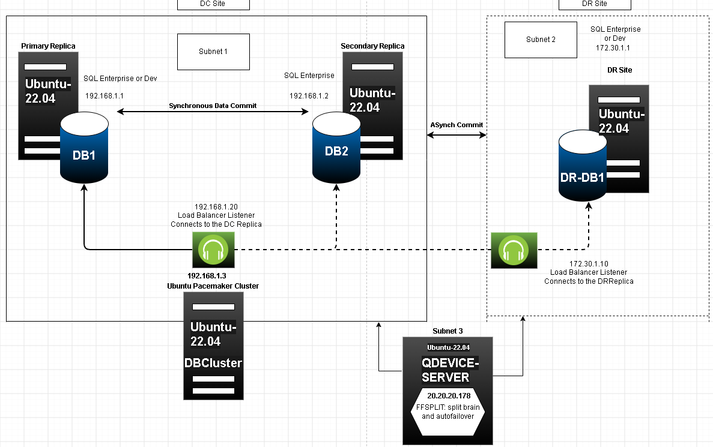

This layout uses a 5-vote topology with two synchronous nodes in the main datacenter, an asynchronous disaster recovery node in a separate subnet, and an external Net Voter providing the dynamic tie-breaking quorum vote:

Figure 1: Cross-Subnet High Availability Network Topology Map
Below are the verified outcomes extracted from testing active crash scenarios under both cluster baselines:
Tracks a 4-vote setup running without an external net witness server.
| Scenario / Setup | Local DC Nodes | DR-DB1 State | Quorum State | Actual Impact & Management Verdict |
|---|---|---|---|---|
| Initial Base State | 🟢 DB1 Primary / 🟢 DB2 Secondary | SYNCHRONIZED | Healthy (4/4 Votes) | Production baseline. Application traffic routes normally via Listenerdc IP. |
| DC Single Node Failure | 🟢 DB1 Primary / 🔴 DB2 Offline | SYNCHRONIZED | Healthy (3/4 Votes) | Functional. Zero service disruption. Datacenter operations continue smoothly. |
| DC Local Dual Node Failure | 🔴 DB1 Crashed / 🔴 DB2 Crashed | SYNCHRONIZED | QUORUM LOSS (2/4) | 💥 TOTAL SITE CRASH. Pacemaker loses quorum, freezes resources, and blocks DR-DB1. |
| Total Cluster Stack Failure | 🟢 DB1 Engine Up / 🟢 DB2 Engine Up | SYNCHRONIZED | CLUSTER DEAD | 🛑 AUTOMATION BREAKDOWN. SQL Server locks instances to prevent split-brain data drift. |
| Automated DR Failover (Passive) | 🔴 DB1 Crashed / 🟢 DB2 Promoted | ASYNCHRONOUS | Healthy (3/4 Votes) | 🟢 SUCCESSFUL LOCAL FAILOVER. Asynchronous DR drops out of safety logic. Failover works. |
Tracks our expanded 5-vote setup using an external QDevice Net Voter on a neutral subnet.
| Scenario / Setup | Local DC Nodes | DR-DB1 State | QDevice / Quorum | Actual Impact & Operational Verdict |
|---|---|---|---|---|
| Initial Base State | 🟢 DB1 Primary / 🟢 DB2 Secondary | 🟢 Secondary (Sync) | Healthy (5/5 Votes) | Production baseline. All nodes healthy, replicas synchronized perfectly. |
| DC Single Node Failure | 🟢 DB1 Primary / 🔴 DB2 Offline | 🟢 Secondary (Sync) | Healthy (4/5 Votes) | Functional. Automated processes keep traffic flowing smoothly on DB1. |
| DC Local Dual Node Failure | 🔴 DB1 Crashed / 🔴 DB2 Crashed | 🟢 Unpromoted | Healthy (3/5 Votes) | ⚠️ CRITICAL ENGINE BLOCK. Cluster has quorum via QDevice, but SQL blocks auto-promotion to protect data. |
| Automated Local DC Failover | 🔴 DB1 Crashed / 🟢 DB2 Promoted | 🟢 Restricted Passive | Healthy (4/5 Votes) | 🟢 SUCCESSFUL AUTOMATIC FAILOVER. Local failover works instantly without getting blocked by DR node. |
Select an implementation chapter below to start configuring the nodes, storage disks, networking layers, or T-SQL endpoints: